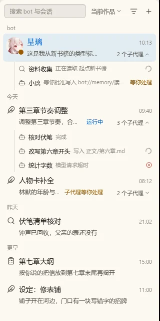
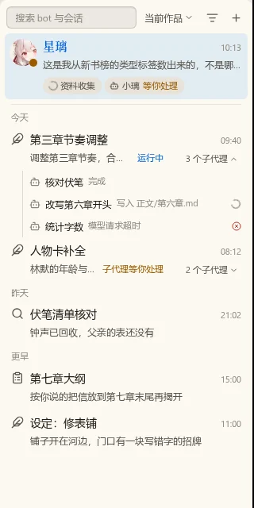
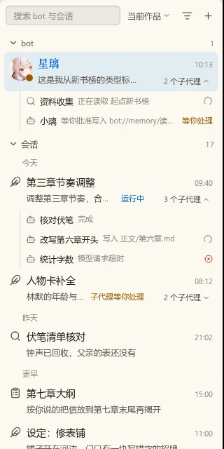

第 3 轮：导航的样式（照会话面板）
bot 与会话两组的标题怎么画？
推荐 C：bot、会话是第一层，今天、昨天是会话里的第二层，层次分得开；组能收起，数量在右边。
A 面板的小字

“bot”和“今天”同一层，读不出谁管谁。
B 置顶

bot 的子会话与子 bot 收成行下面的小标签，点开再看。
C 可收起的组

组的标题行能收起整组；子会话照现在的会话面板。
直接修，不用答
| 哪里 | 改成什么 |
|---|---|
| “还有 12 个会话” | 去掉，列表滚到底自动加载更多（第 2 轮） |
| 过滤（全部、bot、会话） | 第 2 轮的蓝色分段条太抢眼，收进搜索框右边的过滤按钮，和现在会话面板的过滤放在一起 |
| 会话的行、按日分组、“N 个子代理”、子会话行 | 和现在的会话面板一样，子会话直接用现成的子会话行 |
已定
- bot 的视图是 IM 式：左边是聊天与群聊，右边是聊天界面（开发者 2026-11-18）
- 注意力顺序：先看最新的对话与输入框；等你处理的事贴在输入框上方；日程与记忆默认收起；关着时只剩头像加未读气泡；不自动收起
- 左栏放会话；bot 与会话合并成一个“消息”视图，取代现在的会话面板与 Agent 对话视图；对话本身用同一个组件（第 1 轮）
- 放在侧栏；多开放到最后，倾向做成侧栏视图能开多个（第 1 轮）
- 侧栏窄时用头像列加抽屉（第 2 轮）
- 导航的排法：搜索与过滤在顶上、bot 与会话分组、子会话挂在父的下面（第 2 轮）；分组保留，只改样式（第 3 轮）